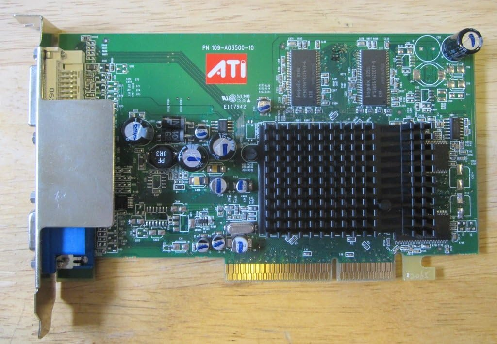

ATI
Radeon 9550
2004
AGP 8x
DirectX 9
Act I — The DirectX 9 Wars

The story
Played on this card
Detecting your device…
The big picture →
How your phone compares to all eight cards combined
The collection
2003
GeForce FX 5600
2004
Radeon 9550
2006
GeForce 7800 GS
2007
Radeon HD 2900 XT
2009
Radeon HD 5750
2013
GeForce GTX 760 FTW
2017
GeForce GTX 1080 Ti
2018
GeForce RTX 2080
← Back to collection